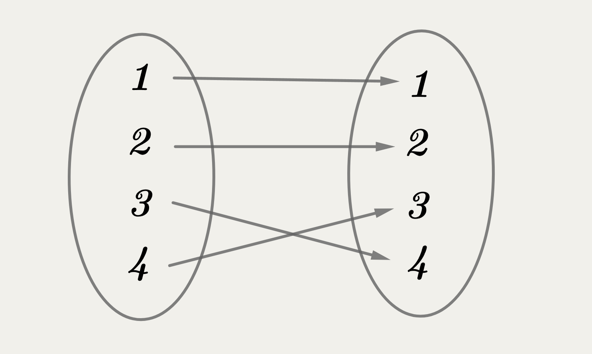
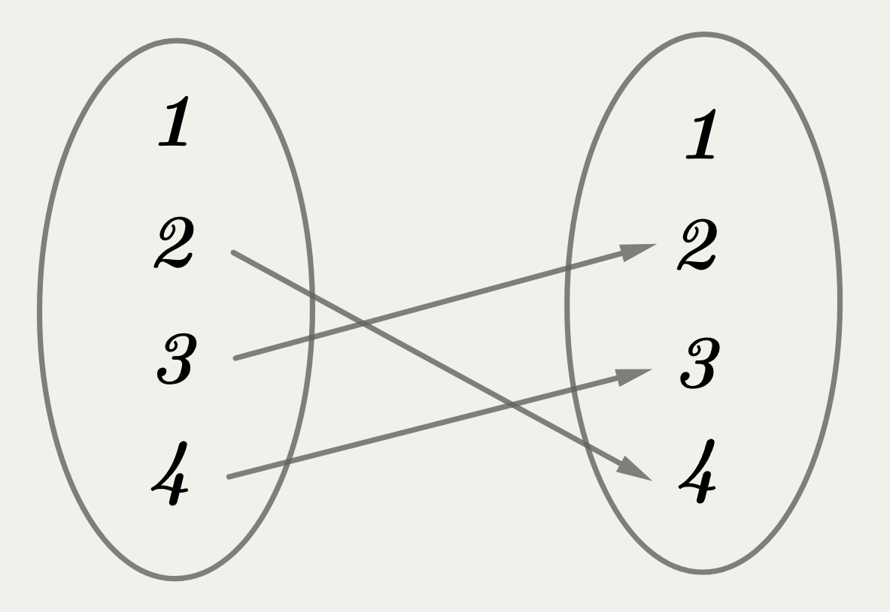
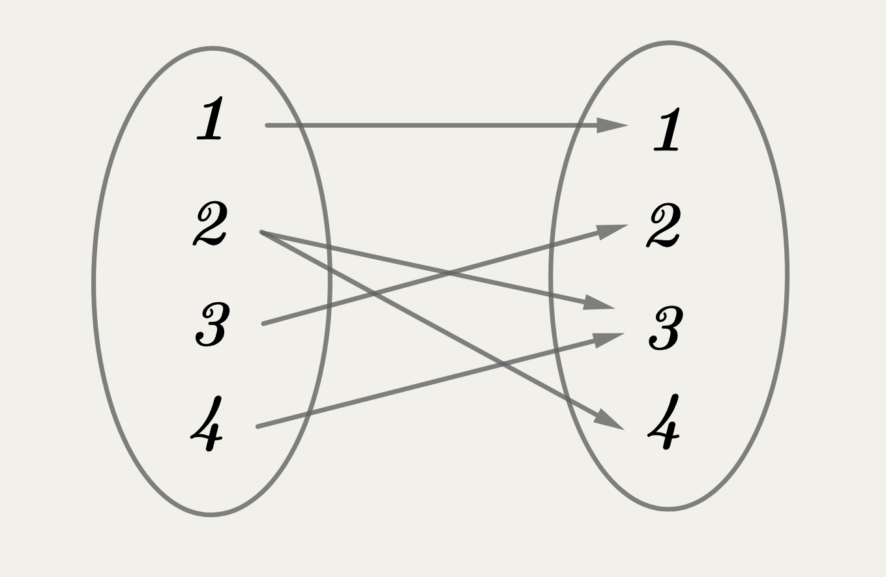
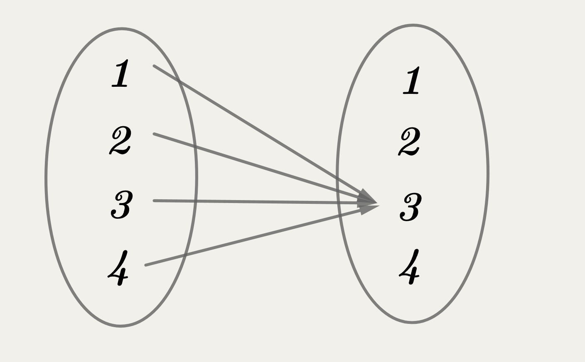
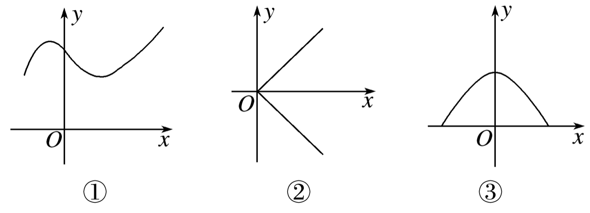
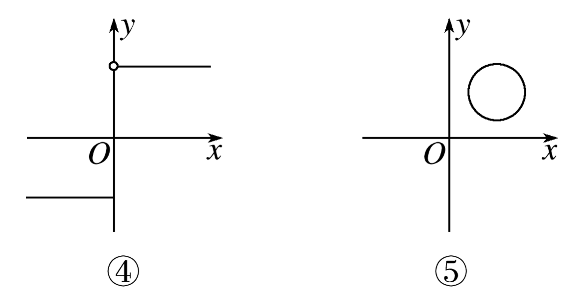
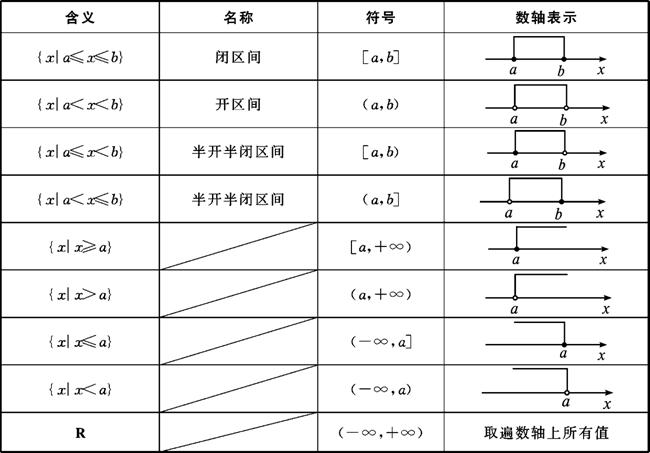

| 年份$y$ | 恩格尔系数$r$(%) |
|---|---|
| 2016 | 29.3 |
| 2017 | 28.6 |
| 2018 | 27.7 |
| 2019 | 27.6 |
| 2020 | 29.2 |
| 2021 | 28.6 |






| 函数 | 定义域 | 值域 | 对应关系 |
|---|---|---|---|
| $y=kx+b,k\not=0$ |
| 函数 | 定义域 | 值域 | 对应关系 |
|---|---|---|---|
| $y=kx+b,k\not=0$ | $R$ | $R$ | 把$R$里面任意数$x$对应到唯一的数$kx+b$ |
| 函数 | 定义域 | 值域 | 对应关系 |
|---|---|---|---|
| $y=ax^2+bx+c,(a \neq 0)$ |
| 函数 | 定义域 | 值域 | 对应关系 |
|---|---|---|---|
| $y=ax^2+bx+c,(a>0)$ | $R$ | $y\geqslant \frac{4ac-b^2}{4a} $ | 把$R$里面任意数$x$对应到唯一的数$ax^2+bx+c$ |
| $y=ax^2+bx+c,(a< 0)$ | $R$ | $y\leqslant \frac{4ac-b^2}{4a} $ | 把$R$里面任意数$x$对应到唯一的数$ax^2+bx+c$ |
| 函数 | 定义域 | 值域 | 对应关系 |
|---|---|---|---|
| $y=\frac{k}{x},k\not=0$ |
| 函数 | 定义域 | 值域 | 对应关系 |
|---|---|---|---|
| $y=\frac{k}{x},k\neq 0$ | $x\neq 0$ | $y\neq 0$ | 把不等于0的任意数$x$对应到唯一的数$\frac{k}{x}$ |
| 概念 | 含义 | 性质 | 表示 |
|---|---|---|---|
| 自变量 | $x$ | 任意性 | 小写拉丁字母 |
| 函数值 | $f(x)$ | 唯一性（多对一或一对一） | $f(x),F(x)$等 |
| 概念 | 含义 | 性质 | 表示 |
|---|---|---|---|
| 定义域 | 使函数有意义的自变量的取值集合 | 非空数集$A$ | 集合 |
| 值域 | 函数值的取值集合 | {$f(x)|x\in A$}$\subseteq B$ | 集合 |
| 概念 | 含义 | 备注 |
|---|---|---|
| $x\in A$ | 函数的定义域为$A$ | 研究函数先看定义域 |
| $y = f(x)$ | 函数符号，表示$x$在对应关系$f$的作用下可得对应的函数值$y$ | 不能理解为“$y$等于$f$乘$x$” |
| 概念 | 含义 | 备注 |
|---|---|---|
| $f$ | 对应法则，表示对$x$实施“对应”操作的方式 | 可为解析式、图象、表格等 |
| $f(x)$ | 函数值$y$，或函数$y=f (x)$的简记 | $f(x)=x^2+2x+1,g(x)=\frac{1}{x^3} $ |
| $f(a)$ | 当$x=a$时函数$f(x)$的取值 | $f(a) $是$f(x) $的一个特殊取值 |
